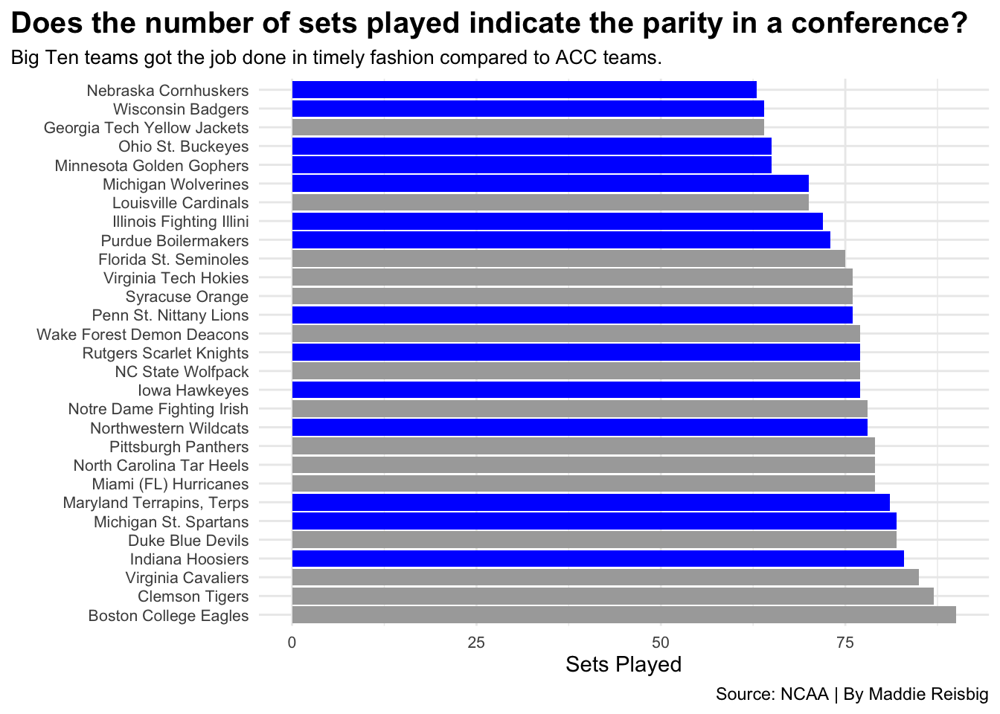
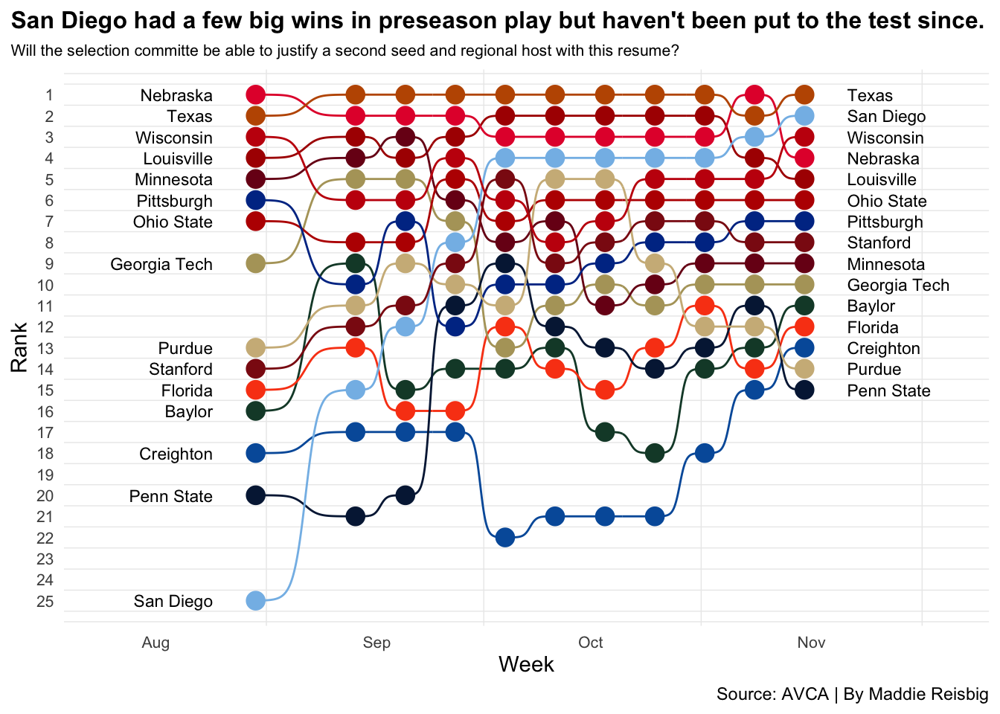
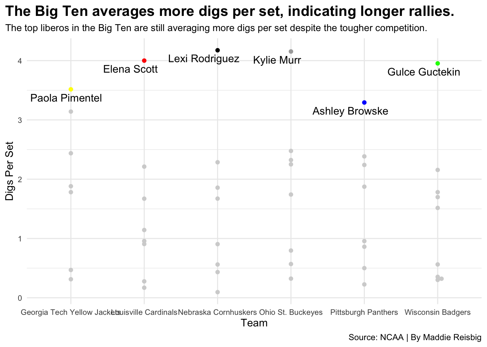

Can the Selection Committee Justify More ACC Teams in the Tournament This Year?
bigten
acc
volleyball
Author
Maddie Reisbig
Published
November 6, 2022
The Big Ten has been the dominating conference in college volleyball for the past decade. Half of the last ten National Championships have belonged to the Big Ten Conference. Prior to this time, Penn State went on a dominant run, winning four straight titles from 2007 to 2010, as well as two more in 2013 and 2014. The Nebraska Cornhuskers have also won their share of titles, taking the championship in 2015 and 2017. Wisconsin recently became the third Big Ten team to win the National Championship, in 2021 after a five set battle with Nebraska.
Throughout the past decade the Big Ten has been widely known as being the premier volleyball conference, with the Pac-12 being a close second. However, in the past couple of years, there has been more and more talk about an up and coming ACC. This past season, two ACC teams made the Final Four, Pittsburgh and Louisville, along with two Big Ten teams, Nebraska and Wisconsin. There was a lot of hype surrounding the ACC teams going into the weekend, but ultimately, the Big Ten ended up sweeping the semifinals. The Big Ten was and is still better than the ACC in college volleyball, and there were two neutral site matches to prove it.
I wanted to examine the number of sets played by each conferences’ member schools this season. By doing this, I realized that the Big Ten teams play a much harder conference schedule yet still get the job done.
Code
library(tidyverse)library(ggbump)library(lubridate)library(ggbeeswarm)library(ggrepel)rankings <-read_csv("avcapollstats.csv")vbdata <-read_csv("ncaa_womens_volleyball_matchstats_2022.csv")players <-read_csv("ncaa_womens_volleyball_playerstats_2022.csv")longrankings <- rankings %>%rename(Conference = Conferemce) %>%filter(`10/31/22`<=15) %>%pivot_longer(cols=c(-"Team", -"Conference"), names_to="Date", values_to="Rank") %>%mutate(Date =mdy(Date)) %>%filter(Rank >0)lower <-as.Date("2022-07-25")upper <-as.Date("2022-11-20")set.seed(1234)activeplayers <- players %>%filter( s >50&is.na(pos) ==FALSE) %>%filter(team %in%c("Wisconsin Badgers", "Ohio St. Buckeyes", "Nebraska Cornhuskers", "Pittsburgh Panthers", "Louisville Cardinals", "Georgia Tech Yellow Jackets")) %>%group_by(team) %>%mutate(digsperset = digs/s)gt <- activeplayers %>%filter(full_name =="Paola Pimentel")lv <- activeplayers %>%filter(full_name =="Elena Scott")nu <- activeplayers %>%filter(full_name =="Lexi Rodriguez")os <- activeplayers %>%filter(full_name =="Kylie Murr")pt <- activeplayers %>%filter(full_name =="Ashley Browske")wi <- activeplayers %>%filter(full_name =="Gulce Guctekin")bigdata <- vbdata %>%filter(team %in%c("Nebraska Cornhuskers", "Iowa Hawkeyes", "Penn St. Nittany Lions", "Minnesota Golden Gophers", "Michigan Wolverines", "Michigan St. Spartans","Northwestern Wildcats", "Purdue Boilermakers", "Indiana Hoosiers", "Maryland Terrapins, Terps", "Rutgers Scarlet Knights", "Wisconsin Badgers", "Ohio St. Buckeyes", "Illinois Fighting Illini")) %>%group_by(team) %>%summarise(totalsets =sum(s) ) accdata <- vbdata %>%filter(team %in%c("Boston College Eagles", "Clemson Tigers", "Duke Blue Devils", "Florida St. Seminoles", "Georgia Tech Yellow Jackets", "Louisville Cardinals", "Miami (FL) Hurricanes", "North Carolina Tar Heels", "NC State Wolfpack", "Notre Dame Fighting Irish", "Pittsburgh Panthers", "Syracuse Orange", "Virginia Cavaliers", "Virginia Tech Hokies", "Wake Forest Demon Deacons")) %>%group_by(team) %>%summarise(totalsets =sum(s) )everyone <- bigdata <- vbdata %>%filter(team %in%c("Nebraska Cornhuskers", "Iowa Hawkeyes", "Penn St. Nittany Lions", "Minnesota Golden Gophers", "Michigan Wolverines", "Michigan St. Spartans","Northwestern Wildcats", "Purdue Boilermakers", "Indiana Hoosiers", "Maryland Terrapins, Terps", "Rutgers Scarlet Knights", "Wisconsin Badgers", "Ohio St. Buckeyes", "Illinois Fighting Illini", "Boston College Eagles", "Clemson Tigers", "Duke Blue Devils", "Florida St. Seminoles", "Georgia Tech Yellow Jackets", "Louisville Cardinals", "Miami (FL) Hurricanes", "North Carolina Tar Heels", "NC State Wolfpack", "Notre Dame Fighting Irish", "Pittsburgh Panthers", "Syracuse Orange", "Virginia Cavaliers", "Virginia Tech Hokies", "Wake Forest Demon Deacons")) %>%group_by(team) %>%summarise(totalsets =sum(s) )ggplot() +geom_bar(data=everyone, aes(x=reorder(team, -totalsets), weight=totalsets), fill="light grey") +geom_bar(data=bigdata, aes(x=reorder(team, -totalsets), weight=totalsets), fill="blue") +geom_bar(data=accdata, aes(team, weight=totalsets), fill="dark grey") +coord_flip() +labs(x="",y="Sets Played", title="Does the number of sets played indicate the parity in a conference?", subtitle="Big Ten teams almost all played more sets than ACC teams, indicating more close matches in the conference.",caption="Source: NCAA | By Maddie Reisbig" ) +theme_minimal() +theme(plot.title =element_text(size =15, face ="bold"),plot.subtitle =element_text(size =10),plot.title.position ="plot",axis.text.x =element_text(size=8),axis.text.y =element_text(size=8), )

From here, we can see that two of the top Big Ten teams play the least amount of sets out of all Big Ten and ACC teams. Compared to their conterparts, Louisville and Pitt, who rank much lower. This shows that the top Big Ten teams are better at getting the job done than the top ACC teams. Not only are they more efficient, but they are doing it against much tougher competition. Seven of the Ten teams that played the most sets are ACC teams. This shows that the bottom of the Big Ten is much stronger than the bottom of the ACC. Even the lower ranked Big Ten teams are battling with the top Big Ten teams. Take Iowa for example. The Hawkeyes are on the brink of a Big Ten win after taking both Purdue and Penn State to five, yet the are tied for last place in the Big Ten currently.
One thing that I believe hinders the visibility of Big Ten dominance is rankings and tournament seedings.
Every year, it seems as if the top Big Ten teams are all placed in the same regional or placed in the toughest regional, while there are other regionals that are not as difficult. But, what makes one team more deserving of a ranking than another, and how do you factor in strength of schedule. Big Ten teams are playing top teams day in and day out. What about San Diego though? They are currently the number two team in the nation. The Toreros had a successful preseason, defeating both Pittsburgh and Ohio State, but since preseason play, they have only faced two ranked teams.
What would a regional look like at San Diego? Would San Diego be ready to face a Nebraska, a Wisconsin, or an Ohio State? I am going to say no. Not after these teams have spent a season in the Big Ten. Take a look at how San Diego has risen so quickly in the rankings over the course of the season. No other team has done this. The Toreros most likely will not drop in the rankings (unless there is an upset in the WCC).This means that it will be even more difficult for a Big Ten team to compete for that spot.
Code
ggplot() +geom_bump(data=longrankings, aes(x=Date, y=Rank, color=Team)) +geom_point(data=longrankings, aes(x=Date, y=Rank, color=Team), size =4) +geom_text(data = longrankings %>%filter(Date ==min(Date)), aes(x = Date -6, y=Rank, label = Team), size =3, hjust =1) +geom_text(data = longrankings %>%filter(Date ==max(Date)), aes(x = Date +6, y=Rank, label = Team), size =3, hjust =0) +scale_x_date(limits=c(lower, upper)) +scale_y_reverse(breaks=c(1,2,3,4,5,6,7,8,9,10,11,12,13,14,15,16,17,18,19,20,21,22,23,24,25)) +scale_color_manual(values =c("#154734","#005CA9", "#FA4616", "#B3A369", "#AD0000", "#7A0019","#E41C38", "#BB0000", "#041E42", "#003594", "#CEB888", "#84BCE8", "#8C1515", "#BF5700", "#C5050C")) +labs(title="San Diego had a few big wins in preseason play but haven't been put to the test since.", subtitle="Will the selection committe be able to justify a second seed and regional host with this resume?", y="Rank", x="Week",caption="Source: AVCA | By Maddie Reisbig") +theme_minimal() +theme(legend.position ="none",panel.grid.major =element_blank(),plot.title =element_text(size =12, face ="bold"),plot.subtitle =element_text(size =8),plot.title.position ="plot",axis.text.x =element_text(size=8),axis.text.y =element_text(size=8), )

Let me pose a question to you. Assuming San Diego wins out, do they deserve a regional host over a Big Ten team who has a few more losses, only because of the tough conference they are in? We will leave that to the committee, but it will sure be interesting to follow as the bracket is revealed concluding regular season play.
The last thing I want to look at is digs. It makes sense that a game with longer rallies will have more digs, correct? Yes, of course! So, where do the liberos of the top three ACC and the top three Big Ten teams rank in digs per set?
Code
ggplot() +geom_beeswarm(data=activeplayers, groupOnX=TRUE, aes(x=team, y=digsperset), color="light grey") +geom_beeswarm(data=gt, groupOnX=TRUE, aes(x=team, y=digsperset), color="yellow") +geom_beeswarm(data=lv, groupOnX=TRUE, aes(x=team, y=digsperset), color="red") +geom_beeswarm(data=nu, groupOnX=TRUE, aes(x=team, y=digsperset), color="black") +geom_beeswarm(data=os, groupOnX=TRUE, aes(x=team, y=digsperset), color="dark grey") +geom_beeswarm(data=pt, groupOnX=TRUE, aes(x=team, y=digsperset), color="blue") +geom_beeswarm(data=wi, groupOnX=TRUE, aes(x=team, y=digsperset), color="green") +geom_text_repel(data=gt, aes(x=team, y=digsperset, label=full_name)) +geom_text_repel(data=lv, aes(x=team, y=digsperset, label=full_name)) +geom_text_repel(data=nu, aes(x=team, y=digsperset, label=full_name)) +geom_text_repel(data=os, aes(x=team, y=digsperset, label=full_name)) +geom_text_repel(data=pt, aes(x=team, y=digsperset, label=full_name)) +geom_text_repel(data=wi, aes(x=team, y=digsperset, label=full_name)) +labs(x="Team",y="digsperset", title="The Big Ten averages more digs per set, indicating longer rallies.", subtitle="The top liberos in the Big Ten are still averaging more digsperset despite the tougher competition.",caption="Source: NCAA | By Maddie Reisbig" ) +theme_minimal() +theme(plot.title =element_text(size =15, face ="bold"),plot.subtitle =element_text(size =10),plot.title.position ="plot",axis.text.x =element_text(size=8),axis.text.y =element_text(size=8), )

Nebraska libero, Lexi Rodriguez stands at the top of the list in digs per set, followed closely by Kylie Murr of Ohio State, Elena Scott of Louisville and Gulce Guctekin of Wisconsin. Other than Louisville, it is clear that the Big Ten has more digs per set, indicating longer rallies and better overall play than the ACC.
I could go into many more examples on why the Big Ten is still the dominant conference in college volleyball despite the hype around the ACC. These charts give some insight into why the Big Ten is still the best, but come tournament time, we will the Big Ten prove themselves through their play.